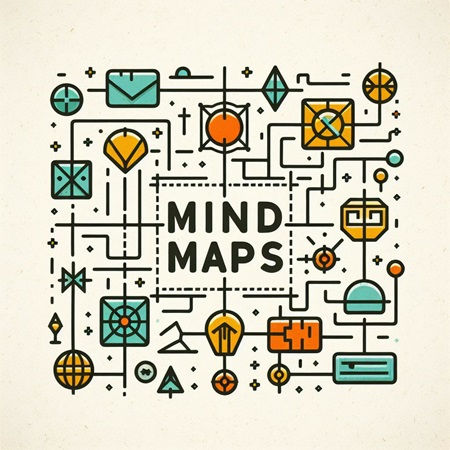
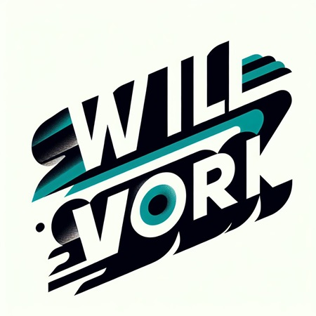
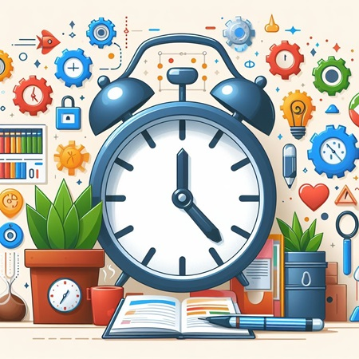

Miracle morning
A VENIR

Les cartes mentales (ou mindmaps) sont des outils visuels puissants qui permettent de représenter graphiquement des idées et des informations de manière organisée et structurée.
Leur utilité dans le cadre du travail d'un étudiant ou d'un lycéen est immense, offrant de nombreux avantages et atouts.
Tout d'abord, les cartes mentales favorisent la pensée créative en permettant de faire des associations libres entre les concepts. D'autant plus qu'une carte mentale est composée de nombreux élements tels que les couleurs, le schémas, les dessins, elle permet de retenir des informations plus efficacement.
En outre, les cartes mentales permettent une grande flexibilité et liberté de l'organisation de l'information sous un format visuel plus simple à retenir (comme dit précedemment). Par exemple, les étudiants ou lycéens peuvent résumer leur cours, planifier un projet, organiser des travaux de groupe, prendre des notes efficaces...
Par ailleurs, les cartes mentales peuvent faciliter la communication des informations et la collaboration grâce son format visuel simple. D'autre part, réaliser des cartes mentales améliorent les compétences en organisation , en pensée critique, logique et synthétique.
Enfin, les cartes mentales sont des outils très polyvalents qui peuvent être utilisés dans de nombreux domaines, pour de nombreuses utilisations de nombreuses manières ( chaque carte mentale étant unique). Ainsi leur utilisation peut être personalisé par les étudiants par exemple pour la synthèse de cours.
Vous pouvez réaliser des cartes mentales gratuitement , personalisables facilement ( couleurs, images,liens...), sur de nombreux sites, comme Mindmesiter.
Je vous prie de trouver les cartes mentales que j'ai réalisées durant le collège et une partie du lycée sur ce même site ici.
Comme vous le savez, beaucoup de nos connaissances proviennent de livres, et il s'agit de l'un des moyens d'apprentissage des connaissances les plus simples et que l'on a appris très jeunes, c'est pourquoi la lecture rapide devient l'une des méthodes les plus recherchées et les plus efficaces pour apprendre plus en moins de temps.
Il n'est pas possible de résumé la lecture rapide en un paragraphe, mais sachez que vous pouvez déjà multiplier par 2, 3 voir 4 votre vitesse de lecture rien qu'avec quelques astuces faciles. Encore plus intéressant, la lecture rapide permet d'économiser du temps et d'assimiler plus d'informations, mais aussi d'améliorer les capacités de concentration, la mémoire. Notez que cette capacité de lecture rapide nécessite tout de même un peu d'entrainement et pour mesurer vos efforts vous pouvez vous chronometrer à lire une page chaque jour.
Il ne faut pas également en voir l'intérêt que dans le travail, en effet, vous pourrez par exemple lire des romans plus rapidement, des articles de journaux...
Une des méthodes les plus simples de lecture rapide est l'appui visuel, par exemple, un doigt ou mieux un stylo que vous placez en dessous de la ligne et du mot que vous lisez peut améliorer la vitesse de lecture en soulageant le cerveau : votre oeil suivra simplement le doigt ou stylo qui guidera votre oeil et posera le rythme de lecture , à vous de trouver ni trop vite ni trop lent ( par exemple, avec cette méthode , j'ai augmenté de 10 le nombres de lignes lues par minute).
Il faut également sortir des apprioris : 'trop dur', 'difficile', 'ennuyeux' qui limitent inconsciemment votre cerveau...
Il existe bien evidemment d'autres méthodes de lecture rapide, que vous trouverez dans des livres spécifiques, plus complexes mais aussi plus performantes : par exemple, ne lire que les 'grands mots' : sujets, verbes, CO; pour ne pas perdre de temps à lire les déterminants ... (ce en plus de la capacité de concentration et volonté de retenir ).

A VENIR
A VENIR

A VENIR